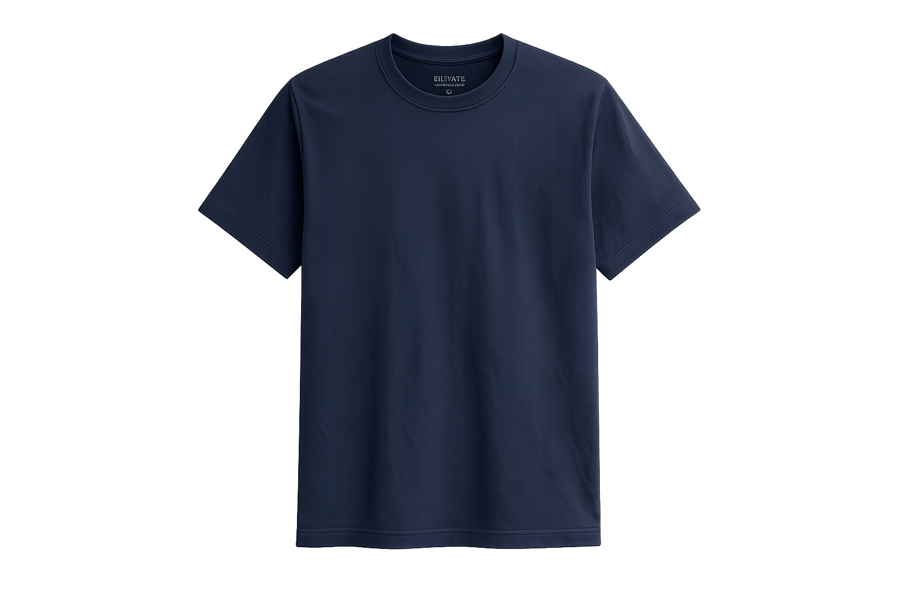

Everything on the label. And a bit more.
Scan the tag on your Lumen Apparel tee to see exactly what it's made of, how it was tested, and what to do with it once you're done — no account, no app, free for anyone to check.

DPP Overview
Points anyone to this exact public record.
One tag, one honest answer.
From 2027, EU rules require clothing brands to publish a Digital Product Passport for every garment. Lumen Apparel built this portal with TechFlow so a shopper can scan the tag and see the real story behind the tee — fibres, test results, footprint and what happens when it's worn out.
This is the public view — open to anyone, no login. Recyclers and auditors see a bit more detail; regulators see the full compliance record. Compare the views →
What's in your tee
Everything Lumen Apparel publishes about this T-shirt, grouped by question. Tap a section to open it.
11 fields
| Product ID | LA-TEE-000123 | SGTIN |
|---|---|---|
| Batch ID | LA-BATCH-2027-0311 | GTIN + lot |
| Model | LA-TEE-CL02 | GTIN-13 |
| Category | Apparel & clothing accessories | ESPR |
| Customs code | HS 6109.10 · TARIC 6109 1000 00 | WCO / TARIC |
| Made by | Lumen Apparel Ltd. · Porto, Portugal | GLN |
| Manufacturing site | Confecções do Norte, Porto | GLN |
| Imported by | Lumen Nordic ApS | EORI |
| Distribution hub | Nordic Distribution Hub | GLN |
+ 3 contact details visible to Regulatory access only
2 fields
| Fibre composition | 80% organic cotton (GOTS) · 20% recycled polyester | Textiles Labelling Reg. |
|---|---|---|
| Construction | Cotton single jersey body · 1×1 rib neckband · cotton twill shoulder tape | — |
4 fields
| Durability | Class B | ESPR method |
|---|---|---|
| Visual inspection | Pass — no defects found | ISO 15487 |
| Twisting after wash | 2.8% (limit ≤ 5%) | ISO 16322-3 |
| Shrinkage after wash | −3.1% length / −1.4% width | ISO 3759 |
+ 1 certificate reference visible to Regulatory access only
3 fields
| Substances of concern | None above threshold — screened against the REACH SVHC list | REACH |
|---|---|---|
| Concentration found | < 0.01% w/w | REACH |
| Safe use | Wash before first wear. No special handling needed. | — |
+ 2 fields visible to Legitimate Interest access only
1 field
| Recyclability rating | Class A — mono-material | ESPR method |
|---|
+ 1 certificate reference visible to Regulatory access only
2 fields
| Recycled content | 20% (in the polyester component) | ISO 14021 |
|---|---|---|
| Source | Post-consumer PET bottles | — |
+ 2 fields visible to Legitimate Interest / Regulatory access
2 fields
| Organic content | 80% certified organic cotton (GOTS) | Reg. (EU) 2018/848 |
|---|---|---|
| EU Ecolabel | Not licensed — GOTS certification held instead | EU Ecolabel |
+ 1 field visible to Legitimate Interest access only
2 fields
| Carbon footprint | Class C | PEFCR Apparel & Footwear |
|---|---|---|
| Environmental footprint | Class C | PEFCR Apparel & Footwear |
+ 2 fields visible to Legitimate Interest access only
4 fields
| Care | Machine wash 30°C · no bleach · tumble dry low · do not iron print | ISO 21600 |
|---|---|---|
| Repair | Free reweave service in year 1 — lumenapparel.eu/repair | — |
| Repair contact | repair@lumenapparel.eu · +351 22 010 4471 | — |
| Warranty | 24 months against manufacturing defects | ISO 22059 |
Scan. Learn. Trust.
Scan the tag on the garment to open its Digital Product Passport — no app or account needed.
Verified sources.
Every figure here comes from Lumen Apparel's suppliers and test labs, verified by TechFlow, our passport service provider.
Built to be reused.
Designed for repair first, recycling second — see the care section above.